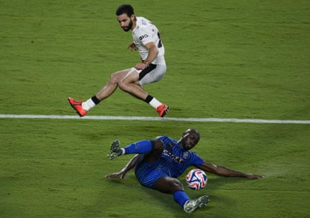

S o it came to pass that the blue moon was eclipsed by the crescent and the world of football took on a slightly different hue. For the past couple of years, the Saudi Pro League had been dismissed as a destination for the old, greedy, unambitious or all three. On Tuesday, European football woke up to be faced with a new side of Saudi Arabian football as Al-Hilal celebrated a 4-3 win over Manchester City to go through to the quarter-finals of the Club World Cup.
If a member of the European elite being turned over by a team that had previously been little-known on the world stage was what the competition needed then this was it.
City may point to mitigating circumstances but not all was perfect in the Saudi camp, either. Al-Hilal arrived in the United States on the back of a long and disappointing season. After dominating the SPL the previous year, setting a world-record winning streak of 34 games along the way, the Riyadh giants were very much second-best to the eventual champions, Al-Ittihad.
Neymar left in January and there were major frustration that the club did not sign someone of a similar stature as a replacement. Aleksandar Mitrovic, scorer of almost a goal a game since arriving from Fulham , is injured. Salem Al-Dawsari, their best player, is also absent. Since last August, Al-Hilal have played almost the same number of games as City and were without a coach for the final stages of the campaign, appointing Simone Inzaghi just before the Club World Cup started.
City fans rightly point to a history before the big-money poured in from Abu Dhabi in 2008. The same is true of Al-Hilal before Riyadh’s Public Investment Fund took over the club – along with the three other biggest teams in the country – in the summer of 2023. They had been champions of Asia four times and Saudi Arabia 19, both records. Also, they reached the final of the 2022 Club World Cup , losing 5-3 to Real Madrid after giving Chelsea a good game in the previous edition.
Al-Hilal have been minnows, but they have certainly strengthened in the past couple of years. Yassine Bounou in goal, defenders Kalidou Koulibaly and João Cancelo, as well as Rúben Neves and Sergej Milinkovic-Savic in midfield, are good enough to shine in any league. Of the two teams it is also worth noting that City have imported more. Phil Foden was the only Englishman to take to the pitch in Orlando for the Premier League side, while eight Saudi Arabians featured for the winners.
Al-Hilal strengthened their defence with Kalidou Koulibaly, who scored against Manchester City.Photograph: Richard Dole/Zuma Press Wire/Shutterstock
The win has gone down well in Asia given it was the first time a team from the world’s biggest continent has beaten the world’s best at this level. Al-Hilal’s success stands in sharp contrast to the performance of the other three sides from the Asian Football Confederation, all of whom were eliminated with a game of the group stage still to play.
Their combined record was one win, eight defeats, six goals scored and 27 conceded. Al Ain managed a victory but were thrashed in their opening two games. Urawa Reds of Japan lost all three of their games. Ulsan HD – accompanied by officials from all of South Korea’s professional clubs – came and went without anybody really noticing.
It was dismal stuff and heightens concerns that the rest of the Asian club game is falling behind that in Saudi Arabia, with the Pro League providing three of the four semi-finalists in the most recent Asian Champions League. Few in Riyadh will care, especially now Al-Hilal have a path to the Club World Cup final and, maybe, a rematch with Madrid. They were plucky outsiders going into the encounter three years ago, just happy to play such an illustrious opponent. That would not be the case now.
Whatever happens, Al-Hilal will always have their win over City. It serves as a reminder that the world game is truly that. It could also mean that the next time a big-name player swaps one of the big clubs in the big European leagues for Saudi Arabia, the talk will be less about greed, ambition and the rest, and a little more about whether he can help close the gap with Europe, one that no longer appears as wide as first thought.